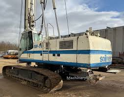

Introduction
Pile load testing is conducted after Continuous Flight Auger (CFA) piling to verify load-bearing capacity and settlement behavior.

About the Author
This project was developed by Abuh Daniel.
Pile load testing is conducted after Continuous Flight Auger (CFA) piling to verify load-bearing capacity and settlement behavior.

This project was developed by Abuh Daniel.